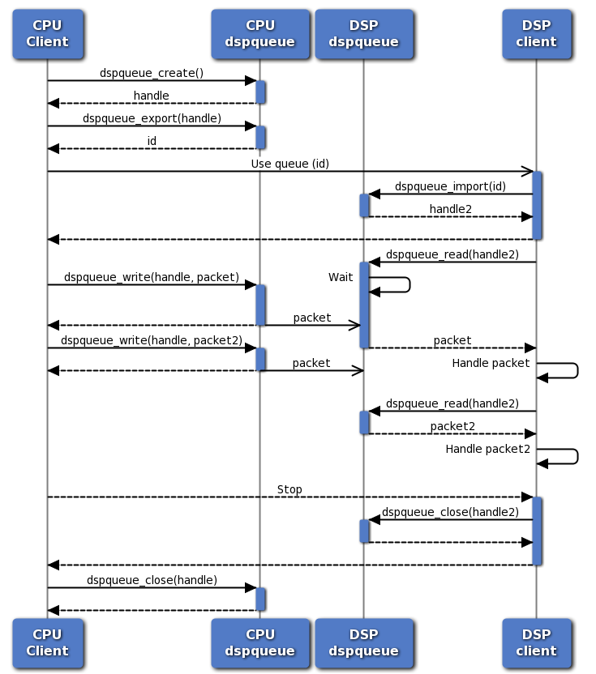

Asynchronous DSP Packet Queue
Introduction
The Asynchronous DSP Packet Queue (dspqueue) is a queue-based
asynchronous inter-processor communication API for communicating
between the main Application CPU and the Hexagon DSP. It provides a
low-overhead communication API for clients that can queue up multiple
requests on the DSP and are looking for a low-level non-IDL-based
communication primitives.
The Asynchronous DSP Packet Queue API is defined and documented in
dspqueue.h. It is supported on Lahaina and later targets on the
Compute DSP or NSP; see the feature matrix.
The dspqueue API provides clients with a number of benefits over
simple FastRPC calls:
-
Clients can queue multiple requests on the DSP without waiting for a response. This helps keep the DSP occupied and can improve throughput regardless of communication latency
-
Messages in queue packets are opaque byte buffers; clients are free to write or reuse custom serialization without using an IDL compiler for their messages.
-
Clients can directly control when cache maintenance operations take place.
The Asynchronous DSP Packet Queue API is not necessarily a better solution for all clients. In particular it has some disadvantages that can affect many applications:
-
Clients must handle marshaling their messages themselves and ensure they trigger cache maintenance operations as needed. FastRPC handles this automatically on the clients' behalf.
-
dspqueuedoes not necessarily improve latency for single-shot operations. Clients will only see throughput improvements if they can asynchronously queue multiple requests on the DSP. -
The framework does not handle in-band buffer mappings; all buffers used in
dspqueuemessages must be first mapped to the DSP's MMU and SMMU. See RPC documentation for a further discussion on shared memory mapping.
dspqueue API
Basic Usage Flow
The Asynchronous DSP Packet Queue is accessed through a simple C API as documented in dspqueue API documentation. The sequence diagram below illustrates a basic usage flow from a client's perspective:
-
The client creates a new queue (
dspqueue_create()), exports it for use on the DSP (dspqueue_export()), and passes the ID to the DSP. On the DSP the client uses the ID to open a local handle to the queue (dspqueue_import()). -
The host CPU client writes messages to the queue (
dspqueue_write()). The write calls return immediately as long as there is space in the queue, in parallel to delivering the packet to the DSP. -
The DSP client reads messages from the queue (
dspqueue_read()). If the queue is empty, the call will block until a packet is available, but if there is already a packet in the queue it returns immediately.
The DSP client can similarly send packets to the CPU client.

Creating Queues
Clients create queues with dspqueue_create() on the host CPU. Some of
the key arguments are:
req_queue_size: CPU to DSP request queue size in bytes. Typical values are around 4kB depending on packet sizes used; the queue should be large enough to hold several packets.resp_queue_size: DSP to CPU queue size in bytes. Similar to the request queue, typical values are around 4kB.packet_callback: Pointer to a packet callback function. See section Callbacks for more details.
See the API definition for more details.
One client can create multiple queues and use them in parallel. The system has an upper limit of queues a single process can use, but it is typically high - 64 in the initial implementation, possibly higher in future products.
Reading and Writing Packets
Both CPU and DSP clients can read and write packets from/to a queue
with dspqueue_read(), dspqueue_write(), and their variants. There are
two basic variants of the functions:
dspqueue_read_noblock()/dspqueue_write_noblock(): Non-blocking read/write operations. These functions will return immediately with an error code (AEE_EWOULDBLOCK) if there is no packet to read or not enough space to write.dspqueue_read()/dspqueue_write(): Blocking operations. These functions will wait until a packet is available or there is sufficient space in the queue. Both functions take an optional timeout parameter and will return with an error code (AEE_EEXPIRED) if the timeout expires before the operation could succeed.
The non-blocking variants are typically used in a packet callback function (see section Callbacks) to read packets. In other cases the blocking variants are usually appropriate.
Each packet consists of the same three basic components which are also visible as arguments to all read/write operations:
-
Flags: Information about packet contents. Mostly used internally within the framework; most clients can currently ignore packet flags. See
enum dspqueue_packet_flags. -
Buffer references: References to pre-mapped buffers, such as input and output buffers for an operation described in the packet. The framework can populate buffer address information and perform cache maintenance operations based on buffer references. See section Buffer References for more information.
-
Message: Opaque message, constructed and interpreted by the client. The
dspqueueframework simply passes the message from the sender to the recipient. Typically the message contains information on what operation to perform on the buffers attached to the packet, arguments, and other data passed by value. Message should be kept relatively small for best performance, typically around 8-256 bytes. The framework currently limits the maximum message size to 64kB.
For read operations the client must provide adequate space for buffer
references and the message. For example, with dspqueue_read_noblock():
AEEResult dspqueue_read_noblock(dspqueue_t queue, uint32_t *flags,
uint32_t max_buffers, uint32_t *num_buffers, struct dspqueue_buffer *buffers,
uint32_t max_message_length, uint32_t *message_length, uint8_t *message);
max_buffers must be equal to or higher than the number of buffer
references in the packet, buffers must point to an array of struct
dspqueue_buffer of the correct size, max_message_length must be
equal to or higher than the length of the message in the packet in
bytes, and message must point to a byte array of
max_message_length. If any of the buffers is too small, the call
will fail with AEE_EBUFFERTOOSMALL.
Buffer References and Cache Maintenance
Each Asynchronous DSP Packet Queue packet can contain one or more
buffer references. Buffer references typically refer to input and
output buffers used in an operation described in the packet. Clients
can use buffer references to get information about buffer mappings
without having to track it themselves and to get the dspqueue
framework to perform cache maintenance operations.
All buffers must be previously mapped to the DSP with
fastrpc_mmap() and must be shareable ION buffers.
For example, this code snippet allocates
and maps a buffer using the RPCMEM library (error handling omitted):
uint64_t remote_addr;
void *buf = rpcmem_alloc(RPCMEM_HEAP_ID_SYSTEM, RPCMEM_DEFAULT_FLAGS, BUFFER_SIZE);
int fd = rpcmem_to_fd(buf);
fastrpc_mmap(CDSP_DOMAIN_ID, fd, buf, 0, BUFFER_SIZE, FASTRPC_MAP_FD);
See the dspqueue Example Application for a
more comprehensive example on allocating and deallocating buffers.
Each buffer reference in a dspqueue packet has five main
properties, corresponding to fields in struct dspqueue_buffer:
-
fd: Buffer file descriptor. The buffer must be mapped to the DSP using the same FD. -
size: Buffer size in bytes. Set to zero to use the whole buffer when writing a packet; in this case the framework will populate the field in received packets. -
offset: Offset in bytes within the allocated buffer. Set to zero to use the whole buffer when writing a packet. A non-zero size and offset can be used to refer to a subsection of a buffer. -
ptr: Buffer virtual address in the current process;NULLif a valid mapping is not available. Populated by the framework in received packets, can be left empty in packets being sent. -
flags: Buffer flags, including cache maintenance operations. Seeenum #dspqueue_buffer_flags.
Buffer flags come in two categories: Changes to buffer reference count and buffer cache maintenance operations:
-
DSPQUEUE_BUFFER_FLAG_REFandDSPQUEUE_BUFFER_FLAG_DEREFare used to add or remove a reference to a buffer. Using them is not mandatory, but can help debugging if a client accidentally attempts to unmap a buffer that is still being used. -
DSPQUEUE_BUFFER_(FLUSH|INVALIDATE)_(SENDER|RECIPIENT)are used to instruct thedspqueueframework to perform cache maintenance on the buffer as part of processing the packet. "Sender" and "recipient" refer to the sender and recipient of the specific packet (CPU or DSP depending on communication direction); "flush" and "invalidate" specify the type of cache maintenance to perform (flush/clean or invalidate). On devices with I/O coherency support the framework will automatically skip cache maintenance operations where possible, so clients should always specify the operations needed assuming CPU and DSP caches are not coherent.
As a rule, buffers must be flushed before any data written to them is visible to the other processor, and must be invalidated before new data can be read. For a typical scenario where the host CPU sends requests to the DSP for processing, the following flags are appropriate:
| Packet | Buffer | Flags |
|---|---|---|
| CPU->DSP Request | Input buffer | DSPQUEUE_BUFFER_FLAG_REF | DSPQUEUE_BUFFER_FLAG_FLUSH_SENDER | DSPQUEUE_BUFFER_FLAG_INVALIDATE_RECIPIENT |
| CPU->DSP Request | Output buffer | DSPQUEUE_BUFFER_FLAG_REF | DSPQUEUE_BUFFER_FLAG_FLUSH_SENDER |
| DSP->CPU Response | Input buffer | DSPQUEUE_BUFFER_FLAG_DEREF | DSPQUEUE_BUFFER_FLAG_FLUSH_SENDER |
| DSP->CPU Response | Output buffer | DSPQUEUE_BUFFER_FLAG_DEREF | DSPQUEUE_BUFFER_FLAG_FLUSH_SENDER | DSPQUEUE_BUFFER_FLAG_INVALIDATE_RECIPIENT |
Note that flushing an input buffer on the "sender" side is not necessary if the application can guarantee the processor has not written to the buffer and the caches do not contain dirty cache lines for it. Performing unnecessary cache maintenance operations is always safe but on some platforms may have a performance penalty.
The dspqueue Example Application illustrates
how to use buffer references, request cache maintenance, and use
framework-provided buffer information to access buffer contents.
Callbacks
The Asynchronous DSP Packet Queue framework provides clients with two types of callbacks:
-
Error callbacks: Called when the framework encounters an unrecoverable error. Such errors are currently only raised on the host CPU when its corresponding DSP process crashes. The only way to recover is to tear down and restart all DSP sessions.
-
Packet callbacks: Called when one or more packets may be available to read from a queue.
Most clients use a packet callback to read packets from a queue instead of blocking read operations. The callback is not called for every packet, but instead the client should read all packets available in the queue before returning from the callback or otherwise ensure all packets will be read. A typical packet callback function has the following structure:
static void packet_callback(dspqueue_t queue, AEEResult error, void *context) {
while ( 1 ) {
//...
AEEResult err = dspqueue_read_noblock(queue, &flags,
MAX_BUFFERS, &num_bufs, &bufs,
sizeof(msg), &msg_len, &msg);
if ( err == AEE_EWOULDBLOCK )
break; // No more packets until next callback
if ( err != 0 )
// Handle error
// Process packet
}
}
See the dspqueue Example Application for a
more complete packet callback example for both the host CPU and the
DSP.
Performance Considerations
Using the Asynchronous DSP Packet Queue can yield better performance
than regular synchronous FastRPC calls, but it is not automatically
more efficient. This section discusses some performance considerations
to get the most out of the dspqueue API.
Queue Depth
The Asynchronous DSP Packet Queue is not designed to improve end-to-end latency for individual requests. Instead, it lets clients queue up multiple requests on the DSP, keeping the DSP occupied and increasing overall throughput. This is only possible if the queues are large enough to hold several packets, and the client application queues enough work.
Queues should typically be sized to fit multiple pieces of work. The exact number depends on the workload, but at a minimum there should be always be a few requests queued, enough to occupy the DSP for at least 5-20 milliseconds. If the DSP can drain the request queue it will end up having to wait the host CPU for more work, reducing the benefit from using the packet queue.
To determine a suitable queue size, consider the size of each packet and the number of packets that should be queued. Each packet consists of a 8-byte header, 24 bytes of data for each buffer reference, plus a message. Each packet is further 8-byte aligned. Assuming four buffer references and a 64-byte message, each packet would be:
8 + 4*24 + 64 = 168 bytes
A 4kB queue would be enough to store around 24 packets, which should be sufficient for most use cases. Packet queues are allocated dynamically from regular system memory, making them fairly inexpensive so allocating a larger queue (16-64kB) would be a reasonable decision.
Early Wakeup
While the Asynchronous DSP Packet Queue is not designed to reduce single-shot latency, it provides a way to reduce latencies by sending "early wakeup packets". Host CPU power management and interrupt handling is a large contributor to end-to-end latency, and clients can reduce the impact by sending an early wakeup packet from the DSP to the CPU a short time before processing is complete. This starts waking up the CPU and executing some of the interrupt handling code while the DSP finishes processing in parallel.
Clients can send an early wakeup packet by calling
AEEResult dspqueue_write_early_wakeup_noblock(dspqueue_t queue,
uint32_t wakeup_delay,
uint32_t packet_flags);
wakeup_delay should be set to the time (in microseconds) until the
actual response packet is available if known; the framework can use
this information to optimize waiting for the final
packet. packet_flags should match the flags for the actual response
packet if known.
Choosing how early to send an early wakeup packet is critical for good
performance. After handling the wakeup packet the dspqueue framework
will wait for the final packet in a tight loop for a period of time -
this can consume power, so long waits should be avoided. On the other
hand sending the wakeup packet too late reduces the benefit seen.
To avoid consuming excess power, the framework limits the wait time
after an early wakeup packet based on the wakeup_delay parameter and
internal limits. If the final packet does not arrive within the
expected time window the framework will revert back to a normal
lower-power higher-latency wait.
Developers can use two statistics from the framework to tune early wakeup signaling:
dspqueue_get_stat(queue, DSPQUEUE_STAT_EARLY_WAKEUP_WAIT_TIME, &val);
dspqueue_get_stat(queue, DSPQUEUE_STAT_EARLY_WAKEUP_MISSES, &val);
DSPQUEUE_STAT_EARLY_WAKEUP_WAIT_TIME returns the total time spent
waiting for the final packet. This time should be minimized to avoid
spending extra processor cycles and power waiting for packets. If the
time is high the early wakeup packets are being sent too early. The
target should be no more than a few microseconds per packet on
average.
DSPQUEUE_STAT_EARLY_WAKEUP_MISSES counts the number of times the
framework did not receive the final packet within a time window and
considered it a miss. If this counter is larger than zero early wakeup
packets are being sent too early or the wakeup_delay value is too
low.
Clients should tune any early wakeup signaling to minimize the end-to-end latency seen while minimizing wakeup wait times. Such tuning is highly workload and product specific.
Early wakeup signaling is also available for packets sent from the host CPU to the DSP but is typically not useful in that direction.
Limits
The current Asynchronous DSP Packet Queue implementation has a number of built-in limits. These limits are chosen so that they are unlikely to impact real-world clients and may be increased or removed in future implementations:
- Number of queues: 64 queues per process
- Queue size: 16 MB. Note that using large packet sizes (multiple kilobytes or more) that would require using large queues is likely to yield poor performance.
- Message size: 64 kB per packet
- Number of buffer references: 64 per packet